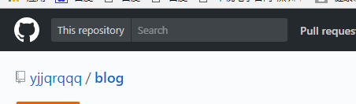
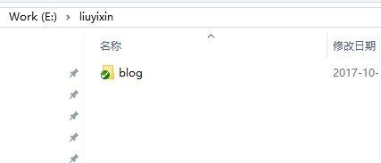

这里项目名取为blog；并通过git工具clone到本地。


GitBook基于NodeJS构建。 https://nodejs.org/en/download/ 下载并安装之
配置淘宝镜像（主要是国内服务器会快些）
npm config set registry https://registry.npm.taobao.org --global
npm config set disturl https://npm.taobao.org/dist --global
npm install -g gitbook-cli
gitbook -V //安装成功，执行该命令会显示gitbook版本
gitbook init
具体的可以参照：http://blog.csdn.net/zhangjk1993/article/details/50380403
{
"language" : "zh-hans", "description" : "blog of liuyixin", "plugins": [ "-search", "-lunr", "disqus", "search-pro", "github" \], "links" : { "sidebar" : { "Home" : "http://www.liuyx.net" } }, "pluginsConfig": { "disqus": { "shortName": "gitbookuse" }, "search-pro": { "cutWordLib": "nodejieba", "defineWord" : \["Gitbook Use"\] }, "github": { "url": "https://github.com/yjjqrqqq/blog" } }}
gitbook install
gitbook serve
使用GitBookEditor可以可视化地编辑文章。
官网下载：http://downloads.editor.gitbook.com/download/windows
百度网盘(7.0.12)： http://pan.baidu.com/s/1pKJaCTd
打开GitBookEditor =>Open=> 选择github目录
接下来就是编辑了， 很Easy。
编辑完成后，可以直接在Editor里将修改同步到GitHub，也可以到目录中通过Git命令同步到GitHub。
可以先在本地预览,http://localhost:4000
gitbook install
gitbook serve
执行以下命令构建WebSite，默认目录在 _book中。 然后将这个静态站发布即可。
gitbook build
Final：
GitHub地址：https://github.com/yjjqrqqq/blog